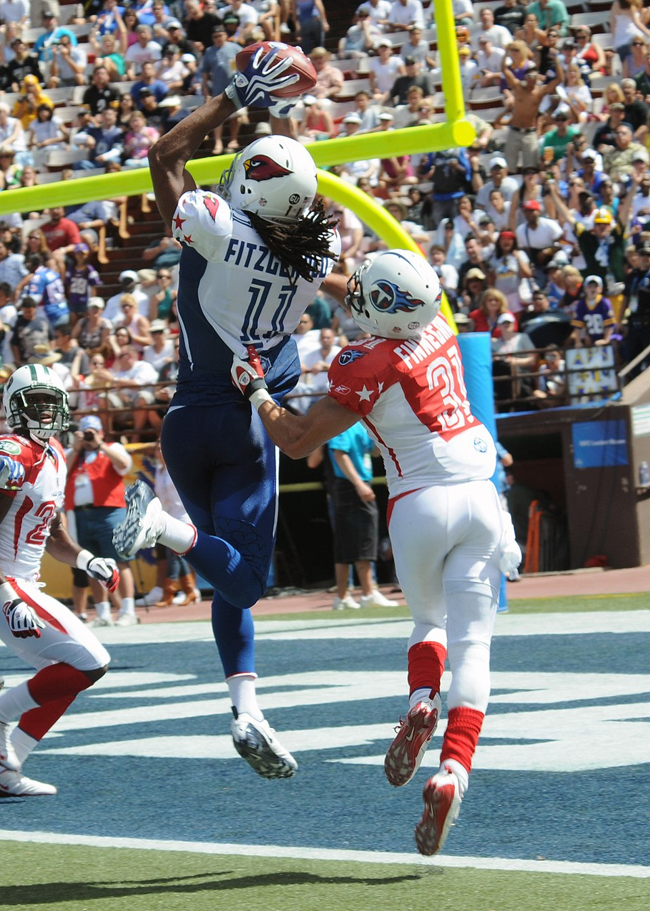

Arizona Cardinals
NFL Team
Delete Roster
Delete the Arizona Cardinals roster? This can't be undone, but you can follow the team again later.
To cancel, select Delete Roster again.

Season Summary
- Season record
- 1-1
- Last game
- L 31-7 vs. Seattle Seahawks (Week 2)
- Next game
- San Francisco 49ers (Week 3)
Key Players
Week 2 Pts = fantasy points scored in Week 2 (PPR). Season Pts = total fantasy points so far. Tip: click a player's row to see why he got his trade signal. Click again to close the explanation.Double-click a player's name to add your own note about him.
| Player | Pos | Week 2 Pts | Season Pts | EPA per Play | Signal |
|---|---|---|---|---|---|
| Trey McBride | TE | 17.9 | 39.6 | 0.24 | Hold |
| Michael Wilson | WR | 15.3 | 27.8 | 0.19 | Hold |
| Jeremiyah Love | RB | 13.2 | 30.1 | -0.04 | Sell High |
| Jacoby Brissett | QB | 9.6 | 26.2 | -0.02 | Hold |
| Tyler Allgeier | RB | 5.2 | 11.0 | 0.08 | Hold |